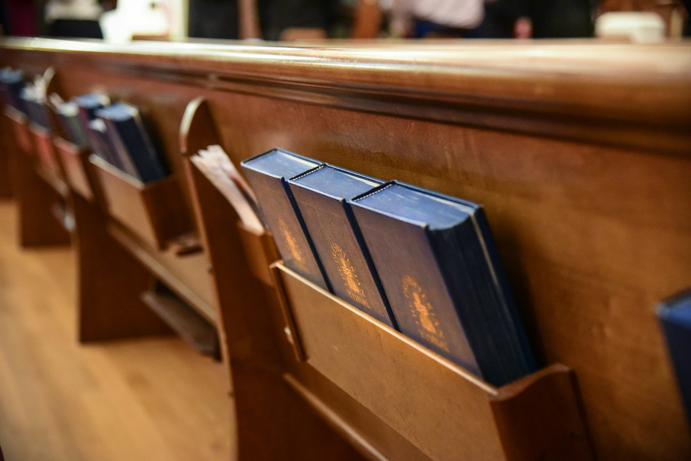
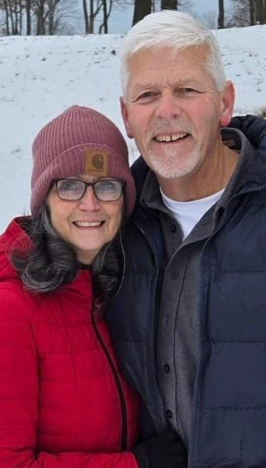

Our Story
The history of First Baptist Church of Capac began in 1871 as the Free Will Baptist Church. Meetings were held in the first schoolhouse in Capac. In 1874 the lot for the present building was donated, and the sanctuary part of church built.
After a tornado blew down the steeple in 1879, and after replacing it, in 1880 lightning struck the steeple, and made the building unfit for use. The building was repaired and named the "First Baptist Church" in 1875.
Money was not plentiful, pastors served more than one church, pound parties were common to supplement the income of the pastors. By the 1900's evidence of growth could be seen. Electric lights replaced gas lights, new furnace, baptistry, choir loft and west annex added. Dedication of improvements in 1904. The devoted pioneers continued to meet strengthening their faith and trust in God.
During the years ahead many pastors served the Church. Improvements and up and down growth continue. Lectern, pulpit, new bathroom, nursery, kitchen, pews, carpeting, organ, piano, lighting, audio system, landscaping and paved off street parking are some of the items added to the church over time.
In 1999 the church completed a new Fellowship Hall and in 2001 the church installed a new sign and additional paved parking. We praise the Lord that in June of 2001. God has truly been faithful in His provisions for this church family.
First Baptist Church of Capac is an Independent, Fundamental, Pre-millennial, Pretribulational, Bible-Believing and Bible-preaching Baptist Church.
We give thanks to God, who has kept this church in the hollow of His hand. Allowing His people to enjoy and participate in the knowledge of His Word, as taught here. We pray that His blessing will continue to fall on many lives far and near in our community and the world.
"…grow in grace, and in the knowledge of our Lord and Saviour Jesus Christ. To him be glory both now and forever. Amen."
II Peter 3:18
Pastor Donald Reynolds
